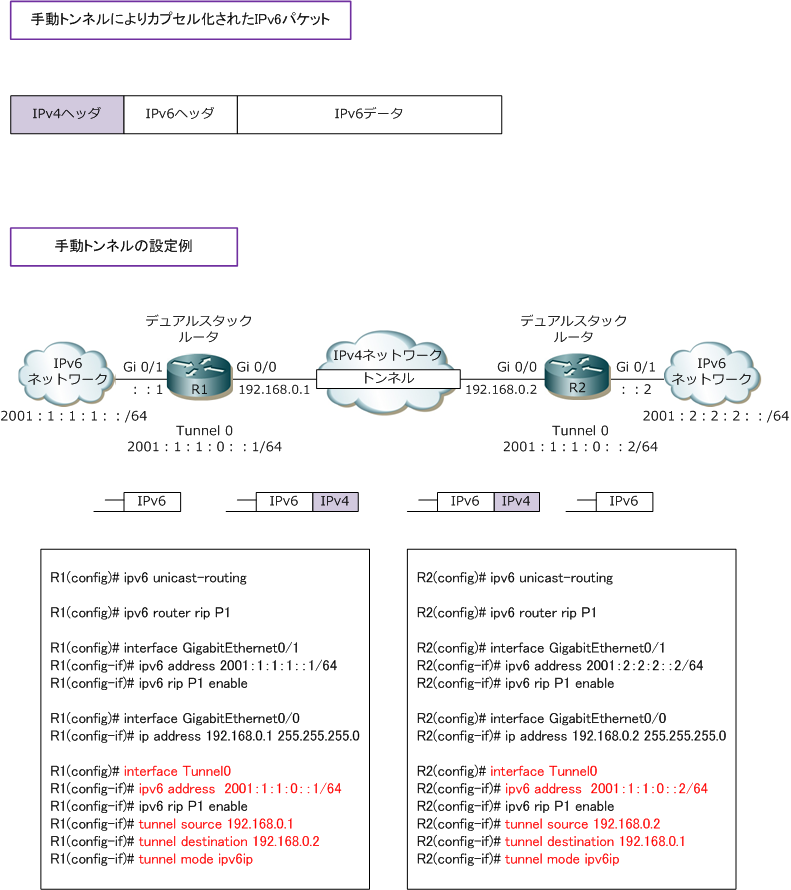
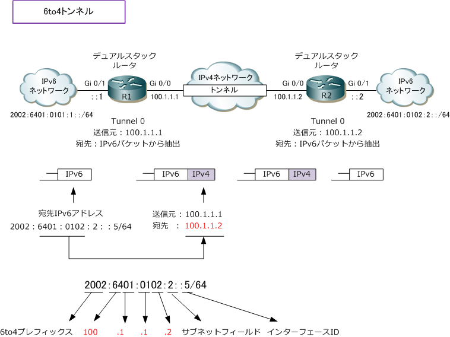
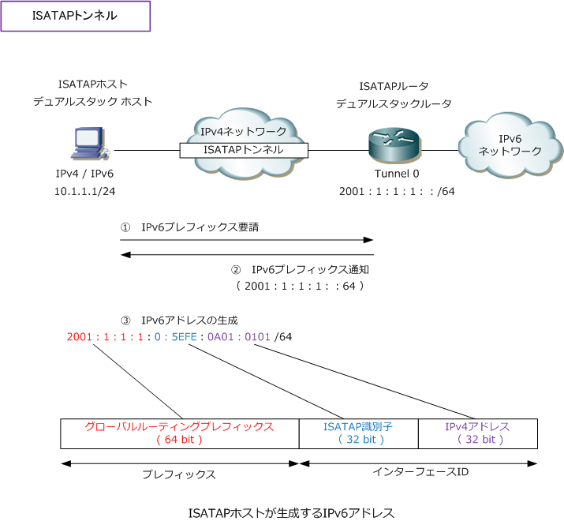

IPv6 Tunnel - ipv6ip / gre ip / 6to4 / isatap
IPv6移行技術 - トンネリング
トンネリングは、IPv4ネットワークを経由してIPv6の通信を行う通信方式です。IPv4ネットワークを経由 するためにIPv6パケットはIPv4パケットにカプセル化した上で転送されます。トンネリングの手法は大きく 手動トンネリング、自動トンネリングの大きく2種類がありそれぞれトンネリングの詳細は以下の通りです。
| 手動トンネリング | 説明 |
|---|---|
| 手動トンネル | サイト間で使用するpoint-to-pointトンネル。IPv6パケットのみ転送できるトンネル。 ◆ トンネルモードの設定 ⇒ tunnel mode ipv6ip |
| GREトンネル | サイト間で使用するpoint-to-pointトンネル。IPv6パケット以外にも多くのパケットを 転送できるトンネル。上記の手動トンネル(ipv6ip)よりもオーバヘッドが多くなることから、 IPv6ネットワークを接続するバックボーンにIPv4インフラがあるなら手動トンネルが推奨。 ◆ トンネルモードの設定 ⇒ tunnel mode gre ip |
| 自動トンネリング | 説明 |
|---|---|
| 6to4トンネル | 手動トンネルと同様、IPv4ネットワークを経由しIPv6接続する際に使用する自動トンネル。 IPv6パケットをIPv4パケットのペイロードとしてカプセル化（IPv4プロトコル番号41を指定） 6to4では、IPv6アドレスに 「2002：：/16」 を使用する。なお、IPv4ネットワークで使用する アドレスはグローバルアドレスである必要がある。サイト間でのpoint-to-Multipointトンネル。 ◆ トンネルモードの設定 ⇒ tunnel mode ipv6ip 6to4 |
| ISATAPトンネル | あるサイト内のIPv4のみのローカルネットワークが、IPv6接続を可能にする自動トンネル。 IPv6ネットワークに接続されていないIPv4ホストに対して、IPv6グローバルユニキャスト アドレスを自動的に割り当てることでIPv6ネットワークへ接続できるようになる。 ◆ トンネルモードの設定 ⇒ tunnel mode ipv6ip isatap |
| Teredoトンネル | ホストがインターネット上にあるTeredo（テレード）サーバと連携し生成される自動トンネル。 IPv6パケットをIPv4のUDPパケットにカプセル化して、複数のIPv4のNATルータを超えて IPv6の通信ができるように設計。通信の開始にあたり必要なIPv6アドレス、宛先ルータの 指定などはTeredoサーバと連携して行う。なお、Teredoはルータで実装させる技術ではない。 |
※ 一般的に使用されることのないIPv4互換による自動トンネリングの設定は tunnel mode ipv6ip auto-tunnel となります。
IPv6 - 手動トンネル
手動トンネルでは、トンネル接続するルータ間でIPv4の送信元アドレスと宛先アドレスを相互に指定して トンネルを先ず確立させます。なお、IPv4でカプセル化されたIPv6パケットのフォーマットは以下となります。

IPv6 - 自動トンネル ( 6to4トンネル )
6to4トンネルでは、手動トンネル同様にデュアルスタックルータ間でトンネルを生成しますが、宛先アドレス は静的に指定しません。着信するIPv6パケットの宛先アドレスから、自動的に宛先IPv4アドレスを導きます。 6to4ではIPv6アドレスのプレフィックスに「2002：：/16」を使用する必要があります。IPv6ネットワークの ホストやルータは6to4対応である必要はないが、6to4トンネルを確立するルータは6to4対応の必要があります。

6to4では宛先アドレスに使用されるIPv4アドレスは一意である必要があるため、グローバルIPv4アドレスを使用する必要があります。
IPv6 - 自動トンネル ( ISATAPトンネル )
ISATAP（Intra-Site Automatic Tunnel Addressing Protocol）は、あるIPv4ネットワークのIPv4ホストが IPv6接続を可能にするトンネルです。ISATAPホストからのプレフィックス要請に対して、ISATAPルータが IPv6プレフィックスを通知し、ISATAPホストがIPv6アドレスを生成することでIPv6接続ができるようになる。

ISATAPホストがIPv6アドレスを自動生成する際に、ISATAP識別子である(0000：5EFE)を上図のように使用。 そして残りの32ビットは自身のIPv4アドレスを16進数に変換して生成します。これらは全て自動で行われます。